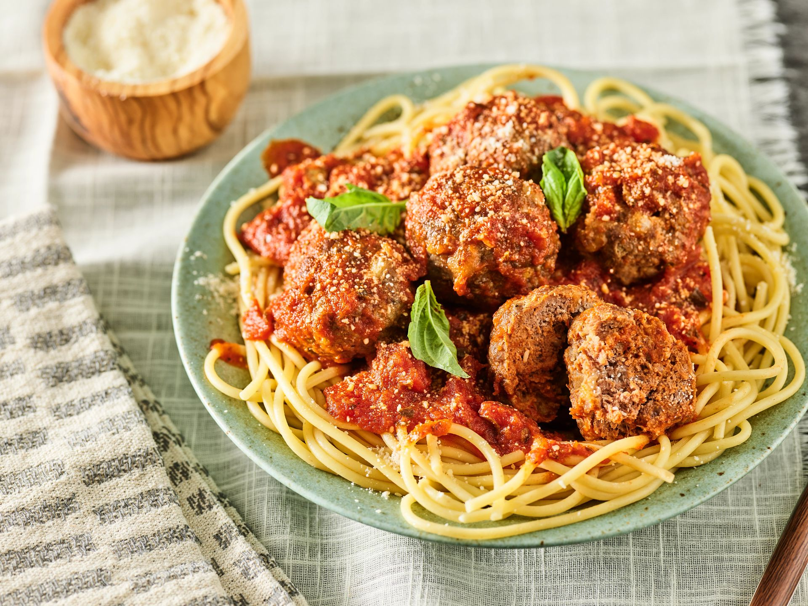

Spaghetti

Description
Classic Italian spaghetti with meat sauce combines al dente pasta with a rich,
garlicky tomato sauce. This version takes just 30 minutes to prepare.
Ingredients
- 1 lb spaghetti
- 1 lb ground beef
- 1 onion, diced
- 4 cloves garlic, minced
- 2 (24 oz) cans crushed tomatoes
- 1 tbsp dried basil
- 1 tbsp dried oregano
- Parmesan cheese
- Salt and pepper
Steps
- Cook spaghetti according to package directions.
- Brown beef, onion, and garlic. Drain excess fat.
- Add tomatoes and herbs. Simmer 20 minutes.
- Season with salt and pepper to taste.
- Serve sauce over pasta with grated parmesan.